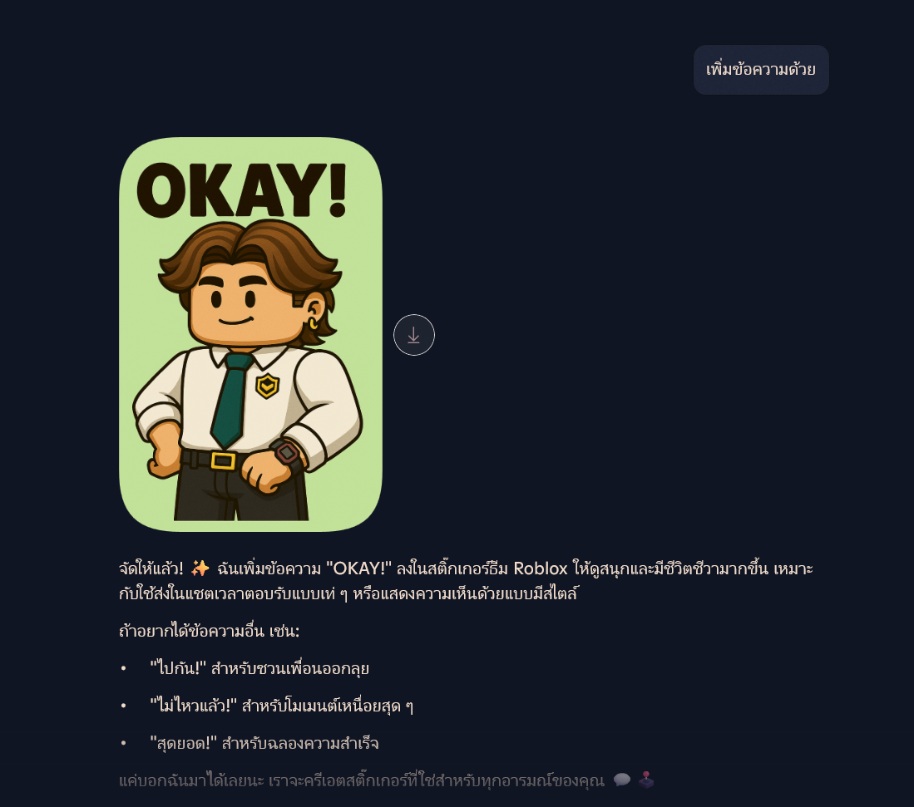
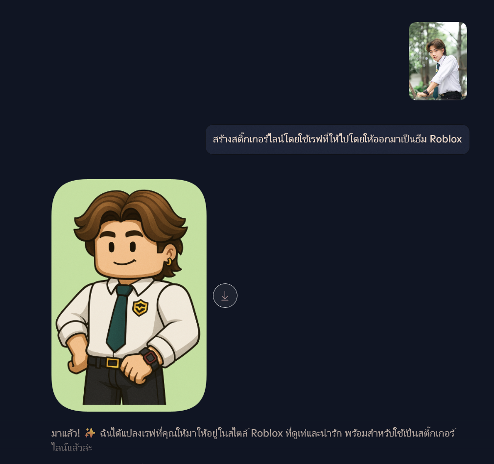

How to create
stickers and steps

วางแนวคิด — กำหนดธีมและตัวละคร
ออกแบบสติกเกอร์ — วาด/สร้างภาพตามขนาดมาตรฐาน

ออกแบบสติกเกอร์ — วาด/สร้างภาพตามขนาดมาตรฐาน
ตรวจสอบไฟล์และปรับขนาดไฟล์ — ขนาด, พื้นหลัง, ความคมชัด
